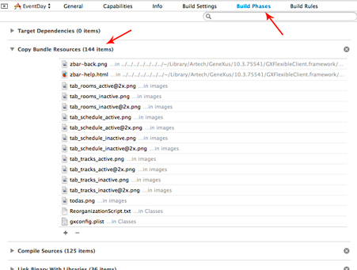
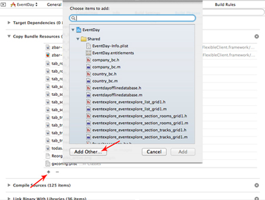

There are many scenarios where the Offline Mobile Apps will need to be installed with some data already loaded into the local database. Furthermore, the first synchronization may take a long time, or initial data may not vary in the future. So there are reasons to have a preloaded database mechanism in developing time. This tutorial is a simple and quick guide for developers that want to create offline applications for Smart Devices with a preloaded database. As an example, this document is based on the Offline branch from EventDay sample. Before you begin...Important: To preload the application's database, you will be using a simulator or a device. You cannot use the same simulator/device to synchronize again! See the section titled Preloaded Hashes bellow for further information. iOS ApplicationsStep 1: Creating the databaseThe first step to have preloaded data is to create the database 1. Open the project in Xcode. 2. Run the application in the iOS Simulator and let it execute the data synchronization process. 3. Once the synchronization is complete, the Xcode console shows us a message similar to this (Look at this document for further information about the debug on Xcode):
Where %USERNAME% is your username, %IOS_TARGET% is the target of the iPhone Simulator, for example "7.0.3". 4. Copy this three files to include them in the Xcode project. This filenames are %APP_NAME%.sqlite, %APP_NAME%_hashes.json and GXBlobData.zip where %APP_NAME% is the name of the application. Note: If you have trouble finding this files, please check out the HowTo: Looking for offline database files document. Step 2: Add the preloaded database to the project1. In Xcode go to Build Phases and expand the section Copy Bundle Resources.  2. Include the copied files to the project.  Important: The file names must be respected because otherwise they will not be found by the application. 3. Build the project on Xcode. Now, when you run the application, the synchronizer process will not bring any data. Android ApplicationsStep 1: Creating the databaseThe first step to have preloaded data is to create the database 1. If you do not have a rooted phone, you have no access to the database unless you change the template to generate the database in sd card. To do that, follow the instructions mentioned in the HowTo: Storing Android offline database files in the device card document. 2. With the device connected to your PC and USB debugging enabled, open logcat and then run the application and let it execute the data synchronization process. 3. Once the synchronization is complete, logcat will show a message similar to this one: GeneXusApplication: DATABASE SYNCHRONIZATION FINISHED GeneXusApplication: Database file: /mnt/sdcard0/Android/data/com.artech.eventdayoffline.eventday/EventDay.sqlite GeneXusApplication: Hashes file: /mnt/sdcard0/Android/data/com.artech.eventdayoffline.eventday/EventDay_hashes.json 4. Copy both files to include them in the Android project. These filenames are %APPNAME%.sqlite and %APPNAME%_hashes.json where %APPNAME% is the name of the application. Note: If you have trouble finding these files, please check out the HowTo: Looking for offline database files document. Step 2: Add the preloaded database to the project1. Rename the copied file EventDay.sqlite to eventday_sqlite (change "." to "_" and lowercase) and rename EventDay_hashes.json to eventday_hashes (remove the extension and lowercase). In addition, replace the dot "." present after the module name (if used) to an underscore "_" (the names will be something like modulename_eventday_sqlite and modulename_eventday_hashes) 2. Add the files EventDay_sqlite and EventDay_hashes in the directory raw of the project generated (\mobile\Android\Main>\src\main\res\raw) and the directory blobs in the directory assets (\mobile\Android\<Main>\assets) Important: The file names must be respected because otherwise they will not be found by the application. 3. For security, revert the change made in step 1.1 4. Build the app on Genexus. Now, when you run the application, all the data and images are going to be in the device without synchronizing them. Advanced conceptsPreloaded HashesThe application's backend (server-side) keeps track of the synchronization hashes by {device, application}. When you preload a database, the DeviceId of the simulator or device used is stored with the hashes that correspond to the preloaded data. If you synchronize again using the same simulator or device, then the original hashes will be removed from the server database, and no other device will be able to synchronize. That's why you must not use the simulator or device used to generate the preloaded database to synchronize again. A possible workaround is to identify the preloaded hashes in the database, by changing the GXDeviceId in the GXDEVICERESULT table.To do that, after executing the first synchronization in the process described above, you may run the following SQL query: UPDATE [GXDEVICERESULT] SET [GXDeviceId] = "Preloaded Data"; Notes:
|